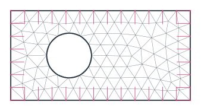
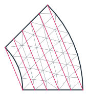
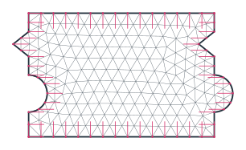
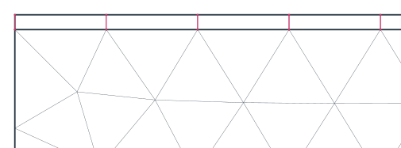

Identifications
A periodic unit cell or a rotational sector needs a mesh whose nodes match on opposite sides, so that a finite element space can couple them. Identify(a, b) pairs the edges named a with the edges named b. netgen then copies the mesh of a onto b, and NGSolve’s Periodic space joins the matching degrees of freedom. The transformation that takes a onto b does not have to be given: planex2d finds it from the geometry at every export, so it follows later changes of the
part. The identification is stored on the face by name and survives Boolean operations, gluing, splitting and motions.
[1]:
import math
from collections import Counter
import ngsolve as ngs
from netgen.meshing import IdentificationType
import planex as px
A periodic unit cell
The example is a unit cell 4 × 2 with a hole of radius 0.5, as used for the homogenization of a perforated plate. The four sides and the hole are named while drawing, and two calls identify left with right and bottom with top. No transformation is given, so planex2d finds the translations itself.
[3]:
s = px.QuickSketch().Line(4, name="bottom").Line((4, 2), name="right").Line((0, 2), name="top")
cell = s.Close(name="left").Circle(1.3, 1, 0.5, name="hole").Face()
cell.Identify("left", "right")
cell.Identify("bottom", "top")
for name, (a, b, trafo, kind) in cell.identifications.items():
print(name, ":", a, "->", b, "transformation", trafo or "found automatically", kind.name)
left-right : left -> right transformation found automatically PERIODIC
bottom-top : bottom -> top transformation found automatically PERIODIC
px.GetTransformation shows the map that the export finds: a translation by the cell’s width.
[4]:
print(px.GetTransformation(cell.edges(name="left"), cell.edges(name="right")))
Transformation(matrix=((1.0, -0.0), (0.0, 1.0)), vector=(4.0, 0.0))
netgen meshes the cell and copies the mesh of each side onto its partner, so the nodes on opposite sides match pair by pair. In the figures, thin pink lines mark the identified points. In a periodic cell, where partners lie a whole cell apart, each point gets a short pink stub pointing towards its partner (Figure 1). NGSolve’s Periodic space joins them. It keeps the numbering of the plain space but marks the copied degrees of freedom as unused, so it has fewer free degrees of freedom.
[5]:
mesh = ngs.Mesh(px.OCCGeometry(cell).GenerateMesh(maxh=0.3))
pairs = mesh.ngmesh.GetIdentifications()
plain = ngs.H1(mesh, order=2)
periodic = ngs.Periodic(ngs.H1(mesh, order=2))
print(len(pairs), "identified point pairs")
print("free degrees of freedom:", sum(plain.FreeDofs()), "plain,", sum(periodic.FreeDofs()), "periodic")
22 identified point pairs
free degrees of freedom: 428 plain, 387 periodic

Check: every identified pair is one translation apart, either by the width or by the height of the cell.
[7]:
points = mesh.ngmesh.Points()
shifts = set()
for p, q, _ in pairs:
a, b = points[p].p, points[q].p
shifts.add((round(b[0] - a[0], 9), round(b[1] - a[1], 9)))
print(sorted(shifts, key=str))
[(0.0, 2.0), (4.0, 0.0)]
A rotational sector
A sector of a ring between the radii 1 and 2, with an opening angle of 45°, stands for the whole ring in a problem with rotational symmetry. Its two straight sides are identified, and planex2d finds the rotation by 45° about the center that takes one side onto the other. Here, the pink lines join each identified pair directly (Figure 2). After the outer arc, the pen points along the arc, so Turn(90) turns it towards the center for the second side.
[8]:
sk = px.QuickSketch((1, 0)).Line(1, name="side a")
sk.Arc(center=(0, 0), sweep=45, name="outer").Turn(90).Line(1, name="side b")
sector = sk.Arc(center=(0, 0), sweep=-45, name="inner").Face()
sector.Identify("side a", "side b")
trafo = px.GetTransformation(sector.edges(name="side a"), sector.edges(name="side b"))
turn = math.degrees(math.atan2(trafo.matrix[1][0], trafo.matrix[0][0]))
print("rotation by", round(turn, 9), "degrees, shift", trafo.vector)
smesh = ngs.Mesh(px.OCCGeometry(sector).GenerateMesh(maxh=0.2))
print(len(smesh.ngmesh.GetIdentifications()), "identified point pairs")
rotation by 45.0 degrees, shift (0.0, 0.0)
6 identified point pairs

A more complicated side
The transformation is found for any chain of lines and arcs, not only for single straight sides. The example is a tile of 3 × 2 that interlocks with its neighbors. Each vertical side is a chain of six edges with a round tab of radius 0.3 and a V-shaped notch 0.25 deep, and the left side is the right side moved by the width of the tile. Both sides are drawn edge by edge, in opposite directions around the face, and only their names connect them. GetTransformation pairs the six edges of one
side with the six of the other and finds the translation (Figure 3).
[10]:
s = px.QuickSketch().Line((3, 0), name="bottom")
s.Line((3, 0.4), name="right").Arc(center=(3, 0.7), sweep=180, name="right")
s.Line((3, 1.3), name="right").Line((2.75, 1.5), name="right")
s.Line((3, 1.7), name="right").Line((3, 2), name="right")
s.Line((0, 2), name="top").Line((0, 1.7), name="left").Line((-0.25, 1.5), name="left")
s.Line((0, 1.3), name="left").Line((0, 1.0), name="left")
s.Arc(center=(0, 0.7), sweep=-180, name="left").Line((0, 0), name="left")
tile = s.Face()
tile.Identify("left", "right")
tile.Identify("bottom", "top")
left, right = tile.edges(name="left"), tile.edges(name="right")
found = px.GetTransformation(left, right)
print(len(left), "edges on each side, shift", tuple(round(x, 12) for x in found.vector))
6 edges on each side, shift (3.0, 0.0)
[11]:
tmesh = ngs.Mesh(px.OCCGeometry(tile).GenerateMesh(maxh=0.2))
tpairs = tmesh.ngmesh.GetIdentifications()
tpoints = tmesh.ngmesh.Points()
shifts = {(round(tpoints[q].p[0] - tpoints[p].p[0], 9), round(tpoints[q].p[1] - tpoints[p].p[1], 9))
for p, q, _ in tpairs}
print(len(tpairs), "identified point pairs, shifts", sorted(shifts, key=str))
print("area", tile.mass, "the tab and the notch cancel:", 3 * 2)
33 identified point pairs, shifts [(0.0, 2.0), (3.0, 0.0)]
area 6.000000000000001 the tab and the notch cancel: 6

Thin layers: CLOSESURFACES
A thin layer, such as a coating, a glue line or an air gap, is hard to mesh with triangles: they either become very small or very flat. The identification type CLOSESURFACES tells netgen that two boundaries lie close to each other, and netgen then fills the layer between them with one row of quadrilaterals, with the nodes on both boundaries paired. The example is a steel plate 4 × 1 with a coating 0.05 thick. The two faces are glued, so they share the interface, and the interface is
identified with the coating’s surface (Figure 4).
[13]:
s = px.QuickSketch().Line(4, name="bottom").Line((4, 1), name="side").Line((0, 1), name="interface")
plate = s.Close(name="side").Face()
plate.name = "steel"
s = px.QuickSketch((0, 1)).Line(4, name="interface").Line((4, 1.05), name="coat side")
coat = s.Line((0, 1.05), name="surface").Close(name="coat side").Face()
coat.name = "coating"
part = px.Glue([plate, coat])
part.Identify("interface", "surface", type=IdentificationType.CLOSESURFACES)
cmesh = ngs.Mesh(px.OCCGeometry(part).GenerateMesh(maxh=0.3))
In the mesh, the steel consists of triangles, and the coating consists of a single row of quadrilaterals:
[14]:
kinds = Counter((el.mat, "quadrilaterals" if len(el.vertices) == 4 else "triangles")
for el in cmesh.Elements(ngs.VOL))
for (material, kind), n in sorted(kinds.items()):
print(material, n, kind)
print(len(cmesh.ngmesh.GetIdentifications()), "identified point pairs across the coating")
coating 13 quadrilaterals
steel 102 triangles
14 identified point pairs across the coating

Options
|
|
|---|---|
|
The names of the edges; the mesh of |
|
The map of |
|
The name of the identification, by default |
|
A |
The export raises an error unless every exported piece of one side pairs with a piece of the other, so a mismatch never goes unnoticed. identifications lists the stored identifications, and RemoveIdentification(name) removes one.